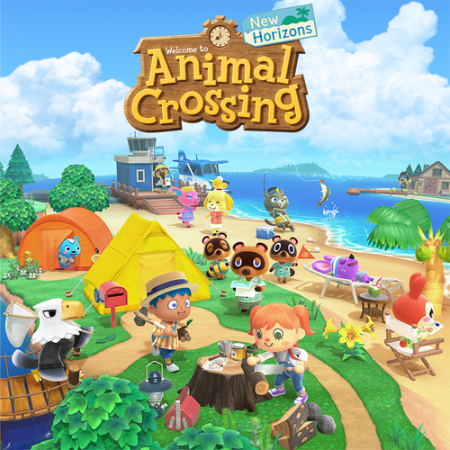

I migliori giochi per Nintendo Switch
La console ideata da Nintendo ti permette di giocare a casa ma non solo, potrai portare sempre con te la tua Nintendo Switch per non dover mai dire basta!
Di seguito i giochi più venduti e apprezzati dalla comunità Nintendo
- The Legend Of Zelda: The Breathe Of Wild
- Animal Crossing: New Horizons 

The Legend of Zelda: Breath of the Wild rivoluziona i capisaldi che hanno caratterizzato la serie per 30 anni, mantenendosi però fedele al concept di fondo. In questa straordinaria avventura i giocatori sono chiamati ad attraversare campi e foreste e a scalare montagne per cercare di capire cosa è successo al regno di Hyrule.
Goditi una vita pacifica e rilassata all'insegna della creatività e del fascino mentre ti rimbocchi le maniche per rendere la tua nuova vita proprio come la vuoi tu.Raccogli risorse e usale per creare quello che vuoi, da comodità a utili strumenti. Asseconda la tua passione per il giardinaggio interagendo con fiori e alberi in modi nuovi. Crea una dimora perfetta dove le regole di cosa va dentro e cosa fuori non valgono più.